逻辑是研究思维的形式及其规律的科学，概念是反映思维对象特性或本质的一种思维形式，因此，要研究逻辑，首先要从概念出发。
科学概念是指组织起来的、系统的科学知识。作为一种科学知识，科学概念必须是基于实证研究的，而且是被科学家共同体所接受和承认的。科学上对于概念的提出和认定是严格的，必须和一定的理论和体系相关。由于科学知识是不断在发展的，所以科学概念也可以发展，甚至纠正，但都必须基于科学研究的结果。
概念是思维形式最基本的组成单位，是构成命题、推理的要素，是组织起来的经验，是基于事实、事件、特性、感知信息进行分类、推理和抽象出来的知识，它使我们能有效地认知、交流、发展我们对世界的认识。
【案例】
关于“人”的概念理解
在 《认识我们自己》一文中，美国著名科普作家阿西莫夫罗列了对“人”这一概念的不同理解：
柏拉图说：“人是无羽毛的两足动物。”
塞涅卡说：“人是社会的动物。”
马克·吐温说：“人是唯一知道羞耻或者需要羞耻的动物。”
赫青黎说：“人是受他的器官奴役的智慧的生物。”
物理学家说：“人是熵的减少者。”
生物化学家说：“人是核酸和酶的相互作用器。”
化学家说：“人是碳原子的产物。”
天文学家说：“人是星核的孩子。”
人类学家说：“人代表着如下特征的缓慢积累：两足的外表，敏锐的目光，勤劳的双手和发达的大脑。”
考古学家说：“人是文化的积累者，城市的建设者，陶器的制造者，农作物的播种者，书写的发明者。”
心理学家说：“人是复杂非凡的大脑的拥有者，具有思维和抽象能力，这种能力压倒他从其他动物祖先那里继承下来的天性和感性。”
神学家说：“人是犯罪和赎恶这出大闹剧的恭顺的参与者。”
社会学家说：“人是他所归属的社会的依次更替的塑造者。”
（一）概念的逻辑特征
概念都既有一个内涵意义，又有一个外延意义。澄清概念就是首先要分析概念的内涵（含义）和外延（指称）是否明确。
由于自然语言具有多义、歧义、含糊、含混等不明确性，因此，理性思维的首要标准是要求概念具有清晰性。
正如美国著名法学家博登海默所说：概念乃是解决法律问题所必需的必不可少的工具。没有概念，我们便无法将我们对法律的思考转变为语言，也无法以一种易懂明了的方式将这些思考传达给他人。如果我们试图完全摒弃概念，那么整个法律大厦就将化为灰烬。
分析：酒店规定中对“洞”这一概念没有定义清晰，被年轻人抓住了破绽。
分析：上述争论产生问题在于“绕着松鼠转一圈”这个短语的意义是不清晰的，两个猎人对这一概念有不同的理解，不解决这一分歧，无论怎么争论，都不会有确定的结果。
概念有两个基本的逻辑特征：内涵和外延。概念的内涵是概念所指称对象的特有属性，通常称之为概念的含义。概念的外延就是概念所指称的那类对象，通常称之为概念的适用范围。澄清概念就是首先要分析概念的内涵（含义）和外延（指称）是否明确。
（1）概念的内涵
在逻辑中，概念的内涵是指反映在概念中的思维对象的特性或本质，是该概念所指称的那个或那些对象所具有的并且被人们认识到的事物的特有属性或区别性特征。具体地说，内涵是概念的质，它说明概念所反映的对象是什么样的。
关于概念的内涵需要强调以下两个方面：
一方面，在日常交际中，内涵是多层次和多方面的。
在人们的日常交际活动中，究竟把握了对象的哪些特有属性才算正确把握了概念的内涵，这是由交际的语境决定的，往往只要我们所把握的对象属性能够将其同其他对象区分开来就行了。由于在不同语境中需要把握的对象特有属性是不同的，因此我们所理解的概念其内涵是多层次方面的。
另一方面，在科学研究中，内涵是唯一的和确定的。
一个科学理论往往是从某个特定的方面分析研究对象，它必须抽象掉对象的其他属性才能将研究深入下去。因此，在特定的科学理论研究中，概念指称的是具有某种特定属性的对象，这样理解的概念不仅外延，而且内涵也是唯一的和确定的。
每个科学理论都对本理论中概念所指称对象的特有属性做出规定，人们是通过这种属性去识别概念所指称的对象，即通过把握概念的内涵去识别把握其外延。正由于概念的内涵是由特定科学理论的定义规定的，即使是同一个概念，在不同理论中作为该理论的概念，它具有不同的表述。
（2）概念的外延
在逻辑中，概念的外延是指具有概念的内涵所反映的那些特性或本质的具体思维对象，就是该概念所指的某个对象或某些对象的集合或类别。
具体地说，外延是概念的量，它说明概念所反映的是哪些对象。就外延的含义来说，它是本质属性的对象，说明概念反映了哪些事物，其范围程度及其所能达到的极限。一个思维对象只有具备内涵所反映的全部特性或本质属性的时候，才属于该概念的外延。
一般来说，概念的外延是唯一的和确定的，但有些概念在现实世界中没有外延。
概念的内涵意义又被称为涵义，在于该概念所具有的性质或者属性。概念的内涵从质的方面规定对象，它表明对象“是什么”。
概念的外延意义又被称为指称，在于该概念所指称的类的那些成员概念的外延从量的方面规定对象，它表明对象“有哪些”。
内涵和外延大致分别相当于现代的术语“意思”和“所指”。
（1）概念的内涵和外延是相互依存、相互制约的
任何概念都有内涵和外延，内涵和外延是相互依存、相互制约的。确定了某一概念的内涵，也就相应确定了该概念的外延;确定了一个概念的外延，也影响了这个概念的内涵。
①内涵决定外延。
当一个概念的内涵固定下来时，它的外延也就固定了。
一般认为，概念的内涵是识别它的外延的向导、依据和标准，换句话说，概念的内涵决定概念的外延。特殊的情况是空概念。
②外延不能决定内涵。外延确定以后，内涵一般也会相应地确定下来。但要注意，概念的外延并不能决定它的内涵。
③内涵与外延的变化关系。
一方面，一般而言，概念的内涵与外延具有“反变规律”。
递增的内涵的次序通常与递减的外延的相同。相反地，递减的内涵的次序通常与递增的外延的相同。即一个概念的内涵越多（即一个概念所反映的事物的特性越多），那么，这个概念的外延就越少（即这个概念所指的事物的数量就越少）；反之，如果一个概念的内涵越少，那么，这个概念的外延就越多。
另一方面，内涵与外延所谓的“反变规律”并不完全正确。有时存在内涵增加但外延不变的情况，我们可以按照增加内涵的数量构成一系列概念，但外延却保持不变。
（2）概念的内涵和外延是确定性与灵活性、主观性和客观性的统一
概念的内涵和外延的确定性是指在一定条件下，概念的含义和适用对象是确定的，不能任意改变或加以混淆。概念的内涵和外延的灵活性是指在不同的条件下，随着客观对象的发展变化和人们认识的深化，概念的含义和适用对象是可以变化的。
作为反映对象本质属性的思维形式，概念就其内容来说，反映客观，来自客观，有其客观根据。因此，概念的内容是客观的。但概念同时也是一种认识形式，属于意识的范畴，从其形式来说，又有其主观的一面。
（1）集合概念与非集合概念
根据概念所指称的是否是集合体，我们可以把概念分为集合概念与非集合概念两大类。
所谓集合体是指由若干同类对象依据特定联系所构成的整体。集合体不同于一般的整体，它必须由同类分子构成。因此，一辆汽车是个整体但不是集合体，因为它由车轮、车厢、发动机等部分构成，而这些构成部分不是同类的。其次，同类分子构成一个集合体必须依据特定的联系。
集合概念是指所指称对象是集合体的概念。如 “车队”“中国女子排球队”“森林”等。集合概念的特征在于构成整体的分子不具有整体的属性。车队由车构成，但车不具有车队的属性，我们看见停车场里停有许多的车，我们并不认为停车场里有一支车队。
非集合概念是指所指称对象不是集合体的概念。以下都是非集合概念：“汽车”“中国女子排球队队员”“树”。
有些时候，一个概念是否是集合概念是由语境决定的。语境不同，概念的指称就有所不同。我们判定一个概念是否是集合概念，就是看它是否指称一个集合体。
分析：两个语句中都出现了概念“鲁迅的著作”。
（2）概念谬误的揭示
运用对内涵与外延的区分，我们可以把玩弄“意义”歧义的谬误论证揭露出来。
分析：只要稍微有一些常识，就知道“公元”这个概念在当时不可能存在。
分析：这里的歧义在于“意义”这一概念的含义，在一种含义上指的是内涵，而在另一种含义上指的却是外延。“上帝”这个词不是无意义的，因此可以肯定，存在一个内涵是它的意义。但是，由此并不能得出：一个具有内涵的概念，其内涵一定指一个存在物。
（二）概念间的外延关系
不同概念所指称的对象可以有相同的，也可以完全不同。概念之间的关系则是分析讨论概念外延之间的重合情况。
两个概念之间的关系有两种情况：如果两个概念所指称表达的对象有相同的，那么这两个概念的外延有重合;如果两个概念所指称表达的是完全不同的对象，那么，这两个概念的外延不重合。相应地，两个概念之间有相容关系和不相容关系两种情况。
相容关系是指两个概念的外延至少有一部分是重合的。相容关系又分为三类，即同一关系、从种关系和交叉关系。
（1）同一关系
同一关系也叫全同关系，是指外延完全重合的两个概念之间的关系，即两个概念指称的是同一个对象。
如果用一个圈代表一个概念的外延，那么S、P两个概念具有全同关系，如图所示：
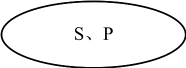
可表示为：所有S是P，并且所有P是S（S= P）。
分析：可发现其中有两个概念的外延可以是重合的。“两个爸爸，两个儿子”实际上可以是三个人，即爷爷、爸爸、儿子。其中一个既是儿子又是爸爸。三个人分三个烧饼，当然是一个人一个。
（2）从属关系
从属关系也叫属种关系，是指一个概念的外延全部包含在另一个概念的外延之中，并且只是另一个概念外延的一部分。
显然，具有属种关系的两个概念中一定有一个的外延大，一个外延小。我们把外延大的概念叫作属概念，外延小的概念叫作种概念。属种关系又分为两类。
①包含于关系。
包含于关系是种概念相对于属概念的关系，显然种包含于属。亦称种属关系，一个概念的外延包含在另一个概念的外延之中，并仅仅作为其外延的一部分，如图所示。
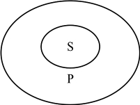
②包含关系。
包含关系是属概念相对于种概念的关系，属包含种。亦称属种关系，一个概念的外延包含着另一个概念的全部外延，并且另一概念的外延仅仅是其外延的一部分，如图所示。
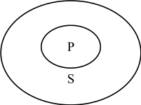
【案例】
白马非马
战国末年的名辩家公孙龙提出了一个“白马非马”的论题。
马者，命形也，白者，命色也，命形非命色也，故曰：白马非马。
公孙龙的论证如下：马是用来称谓马的形体的，白是用来称谓马的颜色的，不是称呼马的形体，所以说白马不是马;再从概念的外延上对“白马”与“马”加以区别，“马”这个概念的外延广，包括所有各种不同颜色的马，“白马”这个概念的外延窄，只限于白色的马，与黑马、黄马的外延排斥，所以“白马非马”。
分析：这一论题涉及汉语的歧义，非即不是，“是”可以认为“等于”，也可以认为“属于”。白马与马是从属关系，既有联系，又有区别，既不能等同，也不能割裂开来。公孙龙看到了白马与马这两个概念在内涵和外延上的区别，这是正确的;但他把这种区别绝对化，把“马”“白”“白马”这些概念都理解成全是孤立的，否认了白马是马的一种，即割裂了一般和个别统一的关系，把差异和统一绝对对立起来，认为一般可以脱离个别存在，这是典型的诡辩。
（3）交叉关系
交叉关系是指两个概念的外延有且只有一部分重合的关系，如图所示。
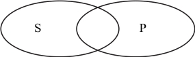
分析：班长概念不清，因为班干部、男同学、女同学、身强力壮者、其他同学的概念间存在交叉关系。
分析：答案是能完成，排出一个正六边形即可。
不相容关系亦称全异关系，是指外延是互相排斥、没有任何部分重合的这样两个概念之间的关系。换句话说，如果两个概念的外延完全不重合，即两个概念所指称的是完全不同对象，那么两个概念之间具有不相容关系，如图所示。
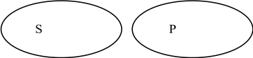
全异关系中有两种特殊情况，即矛盾关系和反对关系。
（1）矛盾关系
矛盾关系是指这样两个概念之间的关系，即两个概念的外延是互相排斥的，而且这两个概念的外延之和穷尽了它们属概念的全部外延，如图所示。
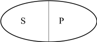
换句话说，具有全异关系的两个概念，如果它们有共同的属概念，并且它们的外延之和等于其属概念，那么，这两个概念间具有矛盾关系。一般来说，正概念与负概念之间具有矛盾关系。
（2）反对关系
反对关系是指这样两个概念之间的关系，即两个概念的外延是互相排斥的，而且这两个概念的外延之和没有穷尽它们属概念的全部外延，如图所示。
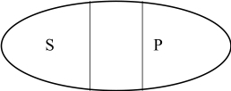
换句话说，具有全异关系的两个概念，如果它们有共同的属概念，但它们的外延之和小于其属概念，我们就称这两个概念间具有反对关系。
当然，反对关系与矛盾关系只是全异关系中的两种特殊情况。只有对那些具有共同属的概念，我们才能说它们之间若不具有反对关系，那就具有矛盾关系。对于两个毫不相干的概念，如概念“法院”与“植物”，我们只能说它们之间是全异关系，因为它们各自指称完全不同的对象，即两个概念的外延完全不重合。
欧拉图分析法是一种逻辑学上的图解，借用18世纪瑞士数学家欧拉（Euler）的做法，就是用圆圈或封闭的曲线，即被后人称为“欧拉圈”的图形来揭示概念间的外延关系。具体做法是用圆圈图形的示意法来表示分析概念之间的外延关系，上述概念间的逻辑关系所用的图示即为欧拉图。针对三个及以上的概念进行欧拉图分析，其画图步骤和相应的注意事项论述如下。
（1）画图步骤
①判定各概念之间的外延关系。
如果题目所提供的几个概念是现实生活中的具体概念，则应根据客观情形去判定;如果题目所提供的仅是A、B、C这种抽象形式的概念，则应根据题目的假设条件去判定。
②画出概念之间的关系图形。
在判定各概念之间的外延关系基础上画出能从整体上反映这几个概念彼此之间外延关系的综合图形。如果适合题目要求的情形不止一种，则应把所有的合适情形都找出来，然后画出与每一合适情形相对应的欧拉图。
③在每个圆圈的适当位置上标注。
（2）注意事项
①先用实线画固定的部分。
②再用虚线画不固定的部分。
③要考虑：一是，实线是否有重合的可能，即同一关系;二是，虚线可能出现的位置。
分析：根据题意，成都人一定是四川人，这样按地域有3个人；
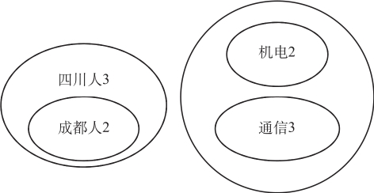
理性思维的首要标准是清晰性，这种清晰性首先是对概念的要求。由于自然语言具有不明确性，常常包含歧义，进而阻碍交流，因此，澄清概念对科学认识有重大意义。明确概念的基本逻辑方法包括概念的限制与概括、划分与分类以及定义。
（一）概念的限制与概括
概念的限制和概括就是如何缩小、扩大概念的外延，使之形成一个新的概念。
概念的限制，就是指通过增加概念的内涵以缩小概念的外延来明确概念的逻辑方法。限制的目的与作用在于，有助于人们对事物的认识从一般过渡到特殊，掌握具体事物的特质，使人们的认识更加具体化，从而在表达思想过程中，概念表达按需要更加准确，论证更加严密。
概念的限制，在语言上通常表现为增加修饰语。
不过，也有不通过增加修饰语，而是直接换语词进行限制的。
因为单独概念的外延只有一个。比如，把“钢琴家”限制为“傅聪”就不能再限制了。
有时候我们写文章时不注意修饰语的合理使用，就会出现一些对概念的不合理的限制。
【案例】
天体
据英国《自然》杂志报道，一个英国天文学家小组发现了宇宙中最亮的一个天体。据称，这个天体也是宇宙中最遥远的天体之一。
分析：宇宙是无限的，现在发现是最亮的，未必就是整个宇宙中最亮的。可惜，上例在传播科学信息的同时，却又不自觉地违反了科学。如果学会明确概念的逻辑方法，则可以避免此类错误。如将外延过大的概念“发现了宇宙中最亮的一个天体”限制为“迄今为止所发现的宇宙中最亮的一个天体”，则可以纠正上例的错误。
概念的概括是指通过减少概念的内涵以扩大概念的外延，由一个外延较小的概念过渡到一个外延较大的概念，即由种概念过渡到属概念的逻辑推演方法。
概括的推演方法也有两种：
一种方法是在被概括的概念前去掉种概念的限制词。
另一种方法是将表示属概念的词语替换掉种概念的词语。
概括同样可以连续进行，但也有极限，概括的极限是哲学范畴。因为哲学范畴是外延最大的属，没有比它更大的属概念了。
错误的概括和限制，可称为“不当限制”和“不当概况”。
在进行限制和概括的过程中要注意以下两个问题，以避免犯逻辑错误：
一是，可以通过增加或减少修饰语的方法对概念进行限制或概括，但并不是所有的修饰语的增加或减少都是限制或概括。
二是，要注意区分整体与部分关系和属种关系。由部分到整体或由整体到部分并不是概括和限制。
总之，通过限制和概括之后形成的概念与原概念应当构成属种关系，如果不是，那么这种限制和概括就是错误的。
分析：本题考查的思维能力涉及概念、概念的内涵与外延、限制与概括等问题。
（二）概念的划分与分类
概念的划分和分类在人类生活中非常重要，如果我们对概念没有划分和分类的方法的话，这个世界就混同在一起，要理解和有条理地进行管理则是不可能的。
划分是指把一个概念的外延，按照一定的标准，分为若干小类的明确概念外延的逻辑方法。
（1）划分的类型
概念的划分可以分为一次划分、连续划分和复分。
①一次划分。
一次划分就是依据一个标准，把母项分为若干子项。这种划分只有母项和子项两层。
一次划分的常用方法是对分法，也叫二分法，把被划分的概念B分成一对具有矛盾关系的概念A和负A。可表示为： B= A+﹁A。
②连续划分。
连续划分就是逐层地多次划分，把划分后的子项作为母项继续划分，直到满足需要为止。在连续划分中，每次划分得到的概念属于同一层次，不同次划分得到的概念属于不同层次。连续划分的母项和子项至少有三层。
③复分。
复分就是指按照不同的标准，把同一母项分为若干子项。
（2）划分的规则
概念的划分应满足以下基本规则：
①各子项之间的关系应当是不相容的。
若不满足此条规则，就会犯“子项相容”的逻辑错误。
②各子项外延之和必须等于母项的外延。
若不满足此条规则，就会出现“多出子项”（ 划分过宽）或“划分不全”的逻辑错误。
分析：这份抽样调查表中的“未婚”“已婚”两个子项的外延相加，小于“婚姻状况”母项的外延，犯了“划分不全”的逻辑错误。应将“婚姻状况”设计为“未婚”“已婚”“丧偶”“离婚”。这才能符合逻辑划分的要求。
③每次划分必须使用同一划分标准。
若不满足此条规则，就会犯“多标准划分”或“子项相容”的逻辑错误（同一划分中包含多个划分标准，子项之间相互包容）。
分析：在一次划分中提出了“大”“好”“红”“圆”四个标准，可面对的实际情况是，所分对象兼容，无法操作。这种在一次划分中用两个以上标准的做法，在语言文字表达上便会造成层次不清，子项势必交叉重叠。
④划分不能越级。
若不满足此条规则，就会犯“概念不当并列”的逻辑错误。具体是指，在划分过程中对概念分类的标准不一致，把不同层次的概念，或把具有交叉或属种关系的概念并列使用。
从逻辑上讲，分类是指以对象的本质属性或显著特征为依据的划分。如果我们对外延对象的划分依据一定的原理和规则来进行，这种划分我们就称为分类。
分类对科学研究非常重要，研究分类的科学称为分类学。概念分类是一项复杂的工程，涉及各个学科。18世纪的欧洲学者林耐就进行了植物和动物的分类学研究，这个研究是人类智慧的一个伟大成果。林耐的分类学既是生物学研究的伟大成果，也是逻辑学领域的伟大成果。
【案例】
生物分类
生物分类也称生物分类学，是研究生物的一种基本方法。了解生物的多样性，保护生物的多样性，都需要对生物进行分类。
生物分类主要是根据在形态结构和生理功能等方面的特征，把生物划分为种和属等不同的等级，并对每一类群的形态结构和生理功能等特征进行科学的描述，以弄清不同类群之间的亲缘关系和进化关系。
分类系统是阶元系统，通常包括七个主要级别：界、门、纲、目、科、属、种。种（物种）是基本单元，近缘的种归合为属，近缘的属归合为科，科隶于目，目隶于纲，纲隶于门，门隶于界。
一、生物的五界分类系统
生物的分类不是一成不变的，而是随着生物科技的进步逐步完善的。下面介绍一下生物分类学上使用较广的五界分类系统：原核生物界、原生生物界、菌物界、植物界、动物界。
★原核生物界（Kingdom Monera）
原核生物是一种无核膜包围的细胞核的单细胞生物，它们的细胞内没有任何带膜的细胞器。原核生物包括细菌和以前称作“蓝绿藻”的蓝细菌，是现存生物中最简单的一群，以分裂生殖繁殖后代。原核生物曾是地球上独一的生命形式，它们独占地球长达20亿年以上。如今它们还是很兴盛，而且在营养液的循环上扮演着重要角色。
★原生生物界（KingdomProtista）
真核原生生物界的生物都是有细胞核的，且几乎是单细胞生物。某些真核原生生物像植物（如矽藻），某些像动物（如变形虫、纤毛虫），某些既像植物又像动物（如眼虫）。
★真菌界（Kingdom Fungi）
本界成员均属真核生物，它是真菌的最高分类阶元。
★植物界（Kingdom Plantae）
本界成员均属真核生物，是能够通过光合作用制造其所需要的食物的生物的总称。
★动物界（Kingdom Animalia）
该界成员均属真核生物，包括一般能自由运动、以（复杂有机物质合成的）碳水化合物和蛋白质为食的所有生物。
二、动物和植物的基本分类
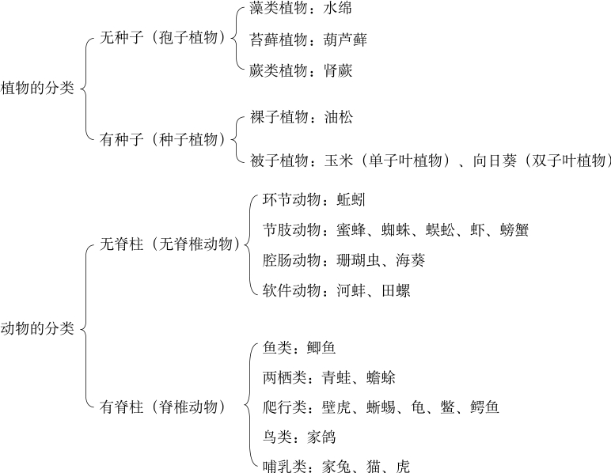
常见动物和植物的分类举例如下：
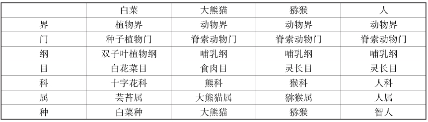
（根据百度百科整理）
要对一个概念的外延对象有一个好的分类，就需要有一个好的分类模式。分类越多，看一个单独事物就越细致，能更好地认识这一类的特性，特性就越突出。分类越少，能从个体里发现的特点就越少，特性就越容易被忽视，结果会导致很多应该发现的规律都没有发现。分类可以区分为两种类型。
一种类型是无评价的分类。
另一种类型是有评价的分类。
（1）分类的逻辑要求
一般而言，一个好的分类模式应该有一些基本的逻辑要求。
①穷尽性。
一个好的分类应该是穷尽的，这就是说，该外延对象的每个成员，经过分类之后，都被放置在某个子类之中，没有遗漏任何一个成员。
分析：规定B的分类似乎更精确，精确到了厘米，但正是规定B忽略了分类的穷尽性要求，它的分类没有覆盖乘客的所有成员，把1.1米到1. 11米、1.5米到1.51米的乘客给漏掉了。当到了争执的时候，就会产生一些麻烦。
②不重复性。
一个好的分类模式不仅是穷尽的，而且分类后的子类成员是不重复的。这就是说，一个成员只能够在某个子类之中，它不能既在一个子类之中，又在分类后的另一个子类之中。
假定政府要给残疾人提供资助，那么就得对残疾人和正常人做出分类。如果我们的分类是具有重复性的，可能出现的情形就是，当政府提供资助的时候，他就是残疾人，而当残疾人的身份对他不利的时候，他又成了正常人。一个好的分类是应该避免这种重复的。
③清晰性。
一个分类的依据是清晰的，这意味着我们进行分类的时候有一个标准，而这个标准是清楚明白的。
（2）复分
复分是指从两个或两个以上的维度同时进行划分的分类方法。相应地，也可称为二维划分或多维划分。
分析：
散文家认为，他所遇到的人中，有的人聪明，有的人有智慧，但没有人既聪明又智慧，即他肯定遇到过聪明不智慧、智慧不聪明这两种人。
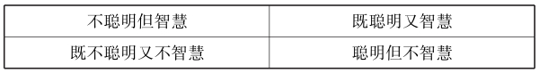
分析：
根据题意，对该校学生的分类如下表：
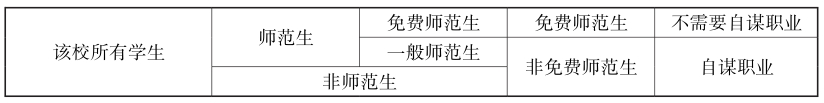
【案例】
垃圾分类的逻辑分析
垃圾分类是对垃圾进行有效处置的一种科学管理方法，进行垃圾分类收集可以减少垃圾处理量和处理设备，降低处理成本，减少土地资源的消耗，具有社会、经济、生态三方面的效益。2019年7月1日，《上海市生活垃圾管理条例》正式实施，上海步入立法强制垃圾分类的时代，成为国内首个通过人大立法方式强制垃圾分类的城市。随着社会文明的发展，越来越多的城市和地方将实行垃圾分类。
一、垃圾分类的难题
实施垃圾分类所面临的挑战很大，一方面是处罚措施能否落实到位;另一方面是垃圾分类的专业知识能否贯彻落实。毋庸置疑，对公众来说，垃圾如何分类是个难题。
上海这次把日常垃圾分为四种：可回收物、有害垃圾、湿垃圾、干垃圾四类。但公众还是有很多迷惑，比如：
为什么胶水明明是液体，却属于干垃圾？
为什么瓜子壳明明是干的，却属于湿垃圾？
为什么会划伤手的碎玻璃不属于有害垃圾，却属于可回收物？
…………
这个分类给公众造成困扰的原因在于，分类逻辑标准不明确：可回收物对应的是不可回收物;有害垃圾对应的是无害垃圾;干垃圾对应的是湿垃圾（表面上看是指是否包含水分，实际上在垃圾分类里面是指是否可分解）。
如此分类的依据到底是什么？有段子说，请猪一试便知，猪吃的是湿垃圾，连猪都不吃的是干垃圾，猪吃了会死的是有毒垃圾，卖了可以买猪的是可回收垃圾。这个说法虽然有些道理，但毕竟从逻辑上讲并不严谨。这里，给出垃圾分类的逻辑分析。
二、垃圾分类的逻辑次序
如果搞清垃圾分类的逻辑，分类就不那么令人头疼了。逻辑上讲，垃圾分类有三个标准：是否有害、是否易腐、是否可回收。要注意的是这三个标准并不是在同一层面分类的，而是要在三个层面依次分别按三个标准进行分类。
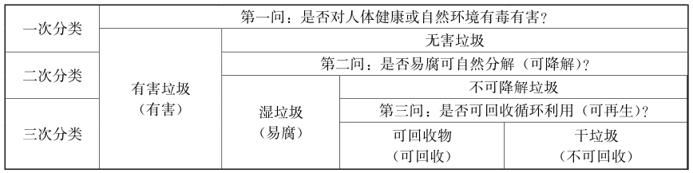
三、垃圾类型的详细解释
下面对四种垃圾类型提供进一步的详细解释：
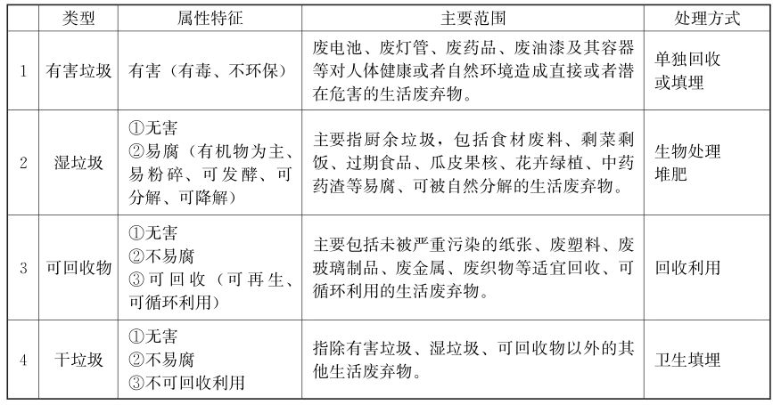
备注：
1.确定是否属于有害垃圾的注意事项
①不能将有害和有危险混作一谈，比如，菜刀很锋利、很危险，但不属于有害垃圾。
②也不能将有害和有污染联系到一起，比如用过的纸尿裤已经被污染了，也不属于有害垃圾。
③其实，有害垃圾指的是它内含重金属或者有毒物质，如果不进行妥当的处理，容易扩散到我们的空气、水源、土地里面去，对人体、对环境造成危害的那些垃圾。
2.确定是否属于湿垃圾的注意事项
①不能将是否带有水分与易腐、可被自然分解混淆，比如，湿纸巾就不属于湿垃圾。
②湿垃圾的处理方式一般是先进行粉碎，粉碎完通过发酵做成肥料。所以，湿垃圾大多是以有机物为主。
③一般来说，厨房里的垃圾是能够被粉碎处理的，但是像猪的大骨、椰子壳、榴莲壳等其实因为太坚硬了，所以机器切不碎，这才使得它们成为了其他垃圾（干垃圾）。粽子叶会缠着机器切割的刀，导致无法进行粉碎，所以也归类到了干垃圾当中。所以，一般可这么理解，凡是厨房内产生的可以切割的都属于厨余垃圾（湿垃圾），难以切割的东西就属于其他垃圾（干垃圾）。
④从严格意义上，厨余垃圾的处理需要破袋，也就是到了垃圾投放点，要把厨余垃圾（湿垃圾）倒进去，而把袋子放到干垃圾当中。
四、垃圾分类的逻辑简图
根据上面的论述，垃圾分类可依次按是否有毒有害、是否易腐可分解、是否可回收循环利用来判断，可列简表如下：
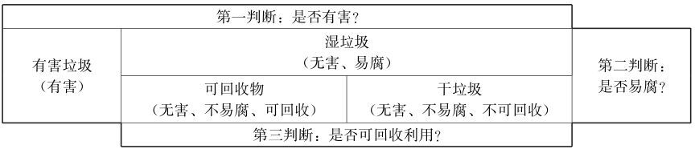
根据上表可看出，垃圾分类可按如下的次序判断：
（1）首先找出“有害垃圾”：即对人体健康或自然环境有毒有害的垃圾。
（2）其次找出“湿垃圾”：即无害、易腐（可自然分解）的垃圾。
（3）再次找出“可回收物”：即无害、不易腐、可回收利用（可再生）的垃圾。
（4）最后剩下的是“干垃圾”：即无害的、不易腐、不可回收利用的其他垃圾。
简而言之，判断次序依次是：是否有害、易腐、可回收。
五、垃圾分类的实例分析
根据上面的逻辑分析，下面举例回答一些容易令人疑惑的问题：
1.水银温度计属于什么垃圾？
是否有害？水银温度计里的水银外泄会对环境造成现实危害或者潜在危害，因此，属于有害垃圾。
2.瓜子属于什么垃圾？
第一判断：是否有害？瓜子无毒害，因此不属于有害垃圾。
第二判断：是否易腐？瓜子易粉碎，在自然环境中易腐，可分解。
因此属于湿垃圾。
3.碎玻璃属于什么垃圾？
第一判断：是否有害？碎玻璃无毒害，因此不属于有害垃圾。
第二判断：是否易腐？碎玻璃在自然环境中不易腐，不可分解，因此不属于湿垃圾。
第三判断：是否可回收？碎玻璃可回收再生，可循环利用。
因此，属于可回收物。
4.胶水属于什么垃圾？
第一判断：是否有害？胶水无毒害，因此不属于有害垃圾。
第二判断：是否易腐？胶水是复杂的精细化学品，不易腐，不可分解，因此不属于湿垃圾。
第三判断：是否可回收？废胶水不可回收利用。
因此，不属于可回收物。
所以，胶水属于干垃圾。
5.废纸尿裤、湿纸巾分别属于什么垃圾？
废纸尿裤无毒害，在自然环境中不易腐，不可分解，不可回收利用，所以属于干垃圾。
湿纸巾无毒害，在自然环境中不易腐，不可分解，不可回收利用，所以属于干垃圾。
6.卫生纸属于什么垃圾？
卫生纸无毒害，在自然环境中不易腐，并且卫生纸水溶性太强，不可回收利用，因此，不属于可回收物。所以属于干垃圾。
7.鸡骨、小碎骨和大棒骨分别属于什么垃圾？
鸡骨、小碎骨的特征是无毒害、易腐（可自然分解），所以，属于湿垃圾。
大棒骨的特征是，无毒害、不易腐（难以自然分解）、不可回收利用，所以，属于干垃圾。
8.坏掉的核桃是什么垃圾？
核桃肉无害、易腐（是有机物），因此是湿垃圾。
核桃壳无害、不易腐、不可回收，因此是干垃圾。
9.为什么都是壳，螃蟹壳就是湿垃圾，而蛤蜊壳却是干垃圾？
螃蟹壳的特征是无毒害、易腐（易粉碎，可自然分解），所以是湿垃圾。
而蛤蜊壳的特征是无毒害、不易腐烂（不易粉碎、难以自然分解），不可回收利用，所以就是干垃圾。
同样是龙虾壳，大龙虾壳是干垃圾，小龙虾壳却是湿垃圾。（根据百度百科整理）
定义是澄清概念和语言意义的方法。人们通过提供一个代号或公式来把被定义的词转换成其他易懂的用语，或者通过揭示该词所涉及的事物的特征（既包括此事物与同类事物的共有特征，也包括使之与其他种类事物区别开来的特征）来划定它的范围，这就是定义。
定义可以用来澄清含糊不清的概念，使模糊的术语更明确。日常生活中，说话有逻辑性，就要把概念定义清楚。要想掌握“精确的语言”，首先就要能够掌握语词“精确的定义”，否则公说公有理，婆说婆有理，因为不是基于同一个定义。
（一）定义的意义与作用
无论是在科学理论中，还是在日常思维中，定义都是一种普遍使用的逻辑方法，发挥着十分重要的作用。具体来说，定义的意义与作用有以下几点：
（1）认识作用
通过定义，人们能够把对事物的已有认识总结、巩固下来，作为后续的认识活动的基础。
【案例】
苏格拉底法
苏格拉底在论辩中形成了具有自己特色的方法，一般称为“苏格拉底法”。苏格拉底法在教学上有其可取之处，它可以启发人的思想，使人主动地去分析、思考问题，用辩证的方法证明真理是具体的，具有相对性。
苏格拉底法可以分为四个部分：讥讽、助产术、归纳和下定义。所谓“讥讽”，就是在谈话中让对方谈出自己对某一问题的看法，然后揭露出对方谈话中的自相矛盾，使对方承认自己对这一问题实际上一无所知。所谓“助产术”，就是用谈话法帮助对方把知识回忆起来，就像助产婆帮助产妇产出婴儿一样。所谓“归纳”，是通过问答使对方的认识能逐步排除事物的个别的、特殊的东西，揭示出事物的本质的、普遍的东西，从而得出事物的“定义”。这是一个从现象、个别到普遍、一般的过程。
道德是什么？
苏格拉底习惯到热闹的雅典市场上去发表演说和与人辩论问题。他同别人谈话、讨论问题时，往往采用一种与众不同的形式。
有一天，苏格拉底来到市场上。他一把拉住一个过路人说道：“对不起!我有个问题弄不明白，向您请教。人人都说要做一个有道德的人，但道德究竟是什么？”
“忠厚诚实，不欺骗别人。”那人答道。
“但为什么和敌人作战时，我军将领却千方百计地去欺骗敌人呢？”苏格拉底继续问道。
那人马上解释道：“欺骗敌人是符合道德的，但欺骗自己人就不道德了。”
苏格拉底反驳道：“当我军被敌军包围时，为了鼓舞士气，将领就欺骗士兵说，援军已经到了，大家奋力拼杀突围，最后突围成功了。这种欺骗也不道德吗？”
那人说：“那是战争中出于无奈才这样做的，日常生活中这样做是不道德的。”
苏格拉底又追问道：“假如你儿子生病了，又不肯吃药，作为父亲，你欺骗他说，这不是药，而是一种很好吃的东西，这也不道德吗？”
那人只好承认：“这种欺骗是符合道德的。”
苏格拉底并不满足，又问道：“不骗人是道德的，骗人也可以是道德的。那就是说，道德不能用骗不骗人来说明。那究竟用什么来说明呢？还是请你告诉我吧!”
那人想了想，道：“不知道道德就不能做到道德，知道了道德便能做到道德。”
苏格拉底这才满意地笑起来，拉着那个人的手说：“您真是一个伟大的哲学家，您告诉了我关于道德的知识，使我弄明白一个长期困惑不解的问题，我衷心地感谢您!”
分析：这一典故说明要给事物下个确切的定义并不容易，虽然这一故事中并没有明确“道德”的定义，但却排除了一些认识上的谬误，逼近了“道德”的本质。
（2）分析作用
通过定义，人们能够揭示一个词项、概念、命题的内涵和外延，从而明确它们的使用范围，进而弄清楚某个词项、概念、命题的使用是否合适。
【案例】
男女平等
甲：男女天生有不同的性格和生理状况，要做到男女平等是没有可能的。
乙：无论是男人或是女人的生命，均有同等价值，应受到同等的尊重，因此男女是平等的。
到底甲和乙的意见是否真的有冲突呢？我们可以应用定义，把“平等”的两个意思分开。
“平等”的其中一个意思，是指拥有相同的性情或身体特征。从这个意义来看，男女平等确实是没有可能的。
但“平等”的另一个意思，是指拥有相同的基本权利，如生存的权利，宗教自由等。
甲用“平等”一词时是第一个意思，而乙则是用了第二个意思，那他们的意见并无矛盾。
（3）解释作用
通过定义，人们对事物的特征、事理加以具体解释说明，使说明更通俗易懂。定义可以用来澄清含糊不清的概念，使模糊的术语更明确。
定义的解释作用在法律中应用广泛，法律语言是一种自然语言，自然语言的模糊性决定了法律语言的模糊性。尽管司法解释在一定程度上可以弥补立法上的不足，但是司法解释毕竟不能也不可能涵盖所有情况，因为司法解释本身所使用的语言有时就是模糊的。但法律具有开放性，法律总是处于不断修订和完善之中。
【案例】
公园睡觉
在某个城市有这样一条法规：“任何人都不得在城市公园里睡觉”。在第一个案件中，一位绅士被发现在午夜的时候，直立于公园的长椅上——他的下巴搭在胸前，闭着眼睛，同时鼾声可闻。在第二个案件中，一个蓬头垢面的流浪汉被发现在午夜的时候躺在同一条椅子上——头下枕着枕头，身上有一张报纸像毯子一样盖着。但是，该流浪汉患有失眠症。根据上述规则，他们两个人皆被逮捕并送交法院。谁将被判罪，这取决于法律对“睡觉”的解释。
（4）交流作用
通过定义，人们在理性的交谈、对话、写作、阅读中，对于所使用的词项、概念、命题能够有一个共同的理解，从而避免因误解、误读而产生的无谓争论，大大提高成功交际的可能性。
定义对于解决语言上的争执非常有用。日常交流中的分歧有时候是真正立场上的分歧，有时候则是情感态度上的分歧，但也有时候实际上没有分歧，只是由于误解而造成了分歧。这点虽然看来简单，但却是辩论台上大多数争执发生的原因，因此，你首先应该给争辩的概念下一个定义，然后再想想你下的定义完整吗？和别人的一样吗？而如果争辩的概念有这么多分歧，那你又要如何去确信裁判、观众或对方辩友会与你采取同一概念？而如果他们连概念都与你不同，那你所谓的“说服”又从何而来？
【案例】
“停下来”与“慢下来”
有位来自美国纽约的资深律师在美国南部一个小镇上误闯了停车线，一位警察拦住了他，示意他马上靠边停车，出示驾驶证。这位律师认为自己受过的高等教育绝对高过这个南部警察，智商也肯定在其之上，于是便装出一副很疑惑的样子：“为什么？”“刚才你在停车线没有把车完全停下来，闯过了停车线。”“但我的确把车慢下来了。”“你必须把车完全停下来，这就是法律。”但律师还要争辩：“这有什么不同吗？如果你能告诉我‘停下来’和‘慢下来’这两个概念在法律意义上的区别，我才会交出我的驾驶证。否则你就得让我离开。”“好吧，请你下车我来告诉你。”当律师刚一出车，这位警察抡起警棍就打律师，一边打一边问：“你是让我停下来，还是慢下来呢？”
分析：在这个言语交际过程中，律师的要求就是让警察对“停下来”和“慢下来”分别做出解释，即给出定义，而警察也以自己的行为语言给出了言简意赅的解释。
（二）定义的结构与规则
定义就是以简短的形式揭示语词、概念、命题的内涵和外延，使人们明确它们的意义及其使用范围的逻辑方法。
定义的一般结构是：被定义项X具有与定义项Y相同的意义。
这种相同的意义也意味着，定义项和被定义项指的是完全相同的对象。定义就是用更易于理解的概念来替换另一个概念。
定义包括三个部分：被定义项、定义项和定义联项。
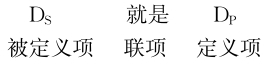
被定义项就是在定义中被解释和说明的语词、概念或命题。内涵定义的被定义项，即被揭示内涵的概念，在陈述句中一般是主语。
定义项就是用来解释、说明被定义项的语词、概念或命题。定义项用来揭示被定义项的概念，在陈述句中一般是宾语。
定义联项是连接被定义项和定义项的语词，例如“是”“就是”“是指”和“当且仅当”等。定义联项联结被定义项与定义项的概念，在陈述句中一般是谓语。
根据定义，定义项是与被定义项具有相同意义的另一种符号或符号串。我们已经看到，在推理中，定义的主要用途是消除歧义。
定义的目的是通过揭示概念的内涵和外延，明确概念的适用范围，并因此判定该概念的某一次具体使用是否适当。
一个好的定义，或者说一个可以接受的定义，必须满足一定的条件或标准，遵守一定的规则。下面列出定义的基本规则：
（1）定义必须揭示被定义项的区别性特征
定义应当揭示被定义项的规约内涵，定义应当揭示种的本质属性，定义应该陈述被定义项的重要的和约定俗成的性质。为了做到特定的概念与特定的事物相配，该概念的定义就必须反映一类事物区别于其他事物的那些特性或特征，只有这样才不会在思维中造成混乱。
既然事物本身具有几乎无穷多的属性，由于认识和实践的需要不同，这些属性中能够起区别作用的并不是唯一的，从不同的角度去看会有不同的起区别作用的属性。但不管怎样，定义必须揭示被定义对象的区别性特征，这一点却是确定无疑的。
（2）被定义项的外延和定义项的外延必须是全同关系
正确的定义，应该定义项和被定义项所指称的外延是相等的。定义项指谓的事物既不应当比被定义项指谓的事物多，也不应当比被定义项指谓的事物少。否则，会犯“定义过窄”或“定义过宽”的逻辑错误。
①定义过窄。
“定义过窄”是指定义项的外延小于被定义项的外延，即一个定义把本来属于被定义概念外延的对象排除在该概念的外延之外。
②定义过宽。
“定义过宽”是指定义项的外延大于被定义项的外延，即一个定义把本来不属于被定义概念外延的对象也包括在该概念的外延之中。
分析：处理错误的案件包括重罪轻判、轻罪重判和无罪而判。对后两种案件进行纠正都可以叫平反，而对于第一种进行纠正，即对原来重罪轻判的案件进行纠正不能叫平反。可见，本例犯了“定义过宽”的逻辑错误。
【案例】
什么是人
相传古希腊时期，有人问当时的大哲学家苏格拉底：“什么是人？”
苏格拉底说：“人是有两条腿的动物。”
问话的人又指着一只鸡说：“这是人吗？”
苏格拉底发现自己给“人”下的定义有问题，又补充说：“人是有两条腿的而无羽毛的动物。”
问话的人又找来一只被拔去了羽毛的鸡说：“那这就是人？”
苏格拉底无言以对。
分析：这个传说里苏格拉底对人下了一个过宽的定义，因此受到了别人的讥讽。
另有传说，当柏拉图在雅典学院的继承者最终决定把“人”定义为“无羽毛的两足动物”时，他们的批评者第欧根尼把一只鸡的毛拔光后，把它从墙上扔进了学院。一个无羽毛的两足动物出现在他们面前，但它肯定不是人，可见，这个定义依旧过宽了。
找到或构建适当的定义项，使之具有精确正确的宽窄度来说明被定义项，常常具有很大挑战性。
（3）定义项中不得直接或间接包含被定义项
这是要求定义不能循环。定义的功能在于用更易于理解的概念或语词替换不好理解的概念或语词。如果定义是循环的，那么它就达不到解释被定义项的意义的目的。违反了这条规则将犯“同语反复”或“循环定义”的逻辑错误。
①同语反复。
“同语反复”是逻辑学中的专用名词，是在定义项中直接地包含了被定义项。
如果被定义项本身出现在定义项之中，那么就只有已经理解被定义项的人才能理解定义项的意义，这就不是一个合适的定义。
需要区别的是，“同语反复”是定义中的逻辑错误，而“同义反复”是语言中的一种修辞手法，就是用不同的词句重复同一个意思。同语表达的命题在任何情况下都为真值，具有特定的语用功能。同义反复可以用作定义和说明，比如同义词定义。说明的词语虽然和被说明的词同义，但因为可能更通俗，可以帮助人理解新词。
但是，当人们把同义反复的句子当作事实陈述（综合陈述）、当作因果陈述来推理、论证时，这就会产生空洞的问题。
②循环定义。
“循环定义”是指在用定义项去刻画、说明被定义项时，定义项本身又需要或依赖于被定义项来说明。
“循环定义”之所以不是合适的定义，是因为如果两个概念的定义相互循环，那就表明它们同样是难以理解的，因为一个语词自己定义自己，等于没有完成有助于理解的替换。循环定义的典型实例是一组定义连环相套，但没有通过定义揭示出自己的内涵。
分析：用原因定义结果，用结果来定义原因，这就是循环定义。
分析：乙的回答犯了“循环定义”的逻辑错误，即为了定义“生命”要用到“有机体”，而定义“有机体”时又用到“生命”的概念。
分析：通过上述定义，我们还是没搞明白什么是逻辑学，什么是思维形式结构的规律。
分析：通过这三个定义，我们既没有明白什么是人，也没有明白什么是理性、什么是高级神经活动，因为它们相互依赖，谁也说明不了谁。
（4）定义项中不得有含混的、晦涩的、歧义的词语
定义必须清楚确切，如果一个定义项中的词项是有歧义的或者是模糊的，这个定义就起不到揭示被定义项的内涵的作用。违反了这条规则将会犯“定义含糊不清”的错误。
当然，普遍的清楚和明白是困难的，定义的清楚确切也只是相对的。因为，第一，任何一个词项都有相对的模糊性，行内人清楚的词项对行外人就可能是模糊的，例如，对比特币等数字货币，不是对数字货币和区块链技术非常在行的人，都只可能是一种模糊的理解。第二，晦涩也是一种相对的东西，对业余者来说晦涩的词汇对专业人员来说却可能是很熟悉的，对儿童晦涩的词汇对大多数成年人来说却可能是合理清晰的。
但不管如何，人们应该在定义中使用尽可能最简单明晰的词语。在科学技术领域，概念的清楚明白肯定是非常必要的，我们弄懂一个专业术语，既需要其定义清楚明白，也需要专业的背景知识。对于人文科学和日常生活世界中的概念，更需要有清楚明白的定义，否则人们若不能理解这些概念，就不能进行有效的交流。
【案例】
“生命”与“进化”
英国哲学家斯宾塞的给出了以下两个定义：
生命是内在关系对外在关系的不断适应。
进化就是物质以及伴随着运动的耗费这两者的整合，在这个整合过程中，物质从不确定的、不一致的同质性转化成为确定的、一致的异质性，而且，在这个整合过程中，那个仍在进行的运动经历了平行的转换。
这两个定义都很模糊，缺乏明晰性，让人感觉不知所云，人们很难从这个定义中知道“生命”“进化”这个两概念究竟是什么含义。
（5）定义不能用比喻
排除定义的模糊歧义还要求在定义中不能使用比喻或者隐喻。违反了这条规则将会犯“用比喻下定义”的错误。
因为通过比喻不能指出概念的内涵，任何含有或者依赖比喻性语言的定义，都不可能是对被定义项的精确解释。这样通过比喻来对概念下定义，人们还是不能了解这些概念本身确切的内涵和外延，它们就是不合适的定义。
在定义中使用比喻或隐喻可以表达关于被定义项用法的一些情感，可以是有趣的、生动的，但是却不能对被定义项的意义给出清楚解释。任何一个事物都可以比喻为任何一个其他的事物，但通过这样的比喻，却不能真正认识一个事物，或者弄清楚一个概念。
（6）定义尽量不用否定
定义在可以用肯定的地方就不应当用否定定义。除非必要，定义不能用否定形式或负概念。
给概念下定义是把一个概念的内涵和外延圈定在一定的范围之内，而不是把概念的意义排除在某个范围之外。把一个概念的意义排除在某个范围之外，一般来说，我们还是没有确定这个概念的意义。
定义是要说明一个概念具有什么意义，而不是要说明它没有什么意义。通过定义，我们是要弄明白一个事物本身是什么，而不是它不是什么。因为一个事物除了是它本身之外，不是世界上其他的一切事物，而这样的事物是列举不完的。
【案例】
真理
德国哲学家黑格尔曾有一句名言：真理不是口袋中现存的铸币。
它具有深刻的哲理，但不能作为“真理”的定义。黑格尔的意思是：真理不是唾手可得的，真理是一个过程，人们要真正学会、领悟一个真理，就必须以压缩的形式去重复人类认识和掌握这个真理的全过程。因此，他说：同一句格言，在一位初涉人世的小伙子嘴里说出来，与在一位饱经风霜的老人嘴里说出来，具有完全不同的内涵。
需要特别指出的是，一个相对肯定性的定义比一个相对否定性的定义更有信息含量，因而它是首选的。然而，有些概念本质上的意义就是否定的，对于这类概念，这个规则就是例外，它们只能用否定的方式来定义。
（7）定义应该避免情感的用辞
情感用辞是指各种煽动受众情感的用法，包括讽刺和幽默以及任何其他种类的能影响看法的语言。
（三）定义的评价与判断
定义是对于一种事物的本质特征或一个概念的内涵和外延所作的确切表述，是认识主体使用判断或命题的语言逻辑形式，确定一个认识对象或事物在有关事物的综合分类系统中的位置和界限，使这个认识对象或事物从有关事物的综合分类系统中彰显出来的认识行为。
对定义的评价需要批判性思维，推理和论证的关键步骤往往就是定义的澄清或者再定义的过程。定义澄清之后原来的论证就改变了。可以通过对定义的思考和讨论，从而对问题的认识进一步深化。
【案例】
替富人说话
经济学者茅于轼指出如今社会上有仇富心理，这正是历史上中国穷的原因之一，所以他要“替富人说话，替穷人办事”。为此他遭到一些人的批评。记者访问他：
记者：但现在民众中有不少认为富人“为富不仁”的观点。
学者：我这里所说的富人不包括贪污盗窃、以权谋私、追求不义之财的那些人，而是指诚实致富，特别是兴办企业致富的企业家和创业者。我愿意为这样的富人说话，那些是寄生虫甚至害虫的不在此列。
通过澄清他的富人概念，是诚实致富的人，而不是那些“寄生虫甚至害虫”，学者愿意为这样的富人说话，看来是有道理的，他的批评者会少得多。然而，这样一来，原来说的社会的“仇富心理”还指的什么呢？有没有可能那些民众的“仇富”是指“为富不仁”的富人，而不是这位学者要保卫的“诚实致富”的富人？所以，概念澄清之后，问题就转化了，他面临的任务，是要证明：他说的那种有危害的社会“仇富”倾向，仇视的是正当致富的人，而不是为富不仁者。
下面列出一些对定义进行深入思考的问题，以助于我们更加深刻地认识概念。
●如何准确理解概念的定义？
●定义的标准是什么？
●定义是否揭示了种概念的区别性特征？
●定义是否清晰、精确？
●在对词语的解释中有无一定的约定俗成性？
●如何通过语词解释判定不同概念之间的区别？
●是否存在曲解概念？是否存在偷换或混淆概念？
●定义是在何种语境下完成的？
●如何发现和评价定义中的价值冲突？
定义判断是公务员等相关考试固定测试的一种题型，具体考查的是应试者运用标准进行判断的能力。在每一道定义判断题中，上文先给出一个概念的定义，然后再给出一组事件或行为的例子，要求应试者根据上文中给出的定义，从备选项中选出一个最为符合或最不符合该定义的典型事物或行为。其解析要点如下：
①上文给出的这个定义假设是正确的，不容置疑的。
②紧扣题目中给出的定义，尤其是定义中那些含有重要内涵的关键词。
③然后再阅读下面给出的事例选项，把选项依次和定义对照，判断选项是否符合定义的规定与要求。如果能够区分开哪些符合、哪些不符合，则正确答案不难得到。
分析：上文断定，原始动机是与生俱来的动机，它们是以人的本能需要为基础的。
分析：由上文，湖州地区用电单位中，超标单位占20%，不超标单位占80%。又近三年来，湖州地区的用电超标单位的数量逐年明显增加，因此，显然可以得出结论：近三年来，湖州地区不超标的用电单位的数量逐年明显增加。所以Ⅰ一定为真。
给概念下定义有很多方法，从外延角度的定义方法大致有示例定义、实指定义和准实指定义;从内涵定义的方法大致有同义定义、操作定义和属加种差定义等。
其中，属加种差的定义方法是一种最常见的形式。
属加种差定义就是把一个指称一个属的词与一个或一组意涵一种种差的词组合起来，以便该组合确定指称该种的那个词项的意义。
先找出被定义词项的属词项，然后找出它与同一个属下的其他物种之间的区别，简称“种差”。属加种差定义的方式是：
被定义的概念=种差+邻近的属
属加种差定义很容易构造。只要选择一个比要定义的词项更一般的词项，然后把它变窄使它意指与要定义的词项相同的事物。
属和种是生物学上的概念，是生物分类“界、门、纲、目、科、属、种”系列中的最后两位。在逻辑中，属和种具有与生物学中略微不同的意义。在逻辑中，属只是意指一个相对较大的类，而种意指属的一个相对较小的子类。换句话说，属和种不过是相对的分类。
我们在定义的基本概念中，提到类和子类、属和种的概念，属加种差的定义方法就是建立在这些概念的基础之上的，属加种差定义是外延定义和内涵定义的综合应用。
通过属加种差来定义概念的可能性取决于有很多属性的复杂事实，即它们可以分析为两个或更多的其他属性。这种复杂性和可分析性可以依据类这个概念而得到最好的说明。
2.属加种差定义的步骤
属加种差的定义方法可以描述为：如果我们在给一个词项下定义的时候，被定义项是由这样两部分构成：一个部分是该定义项的属，即定义项是这个属的子类;另一个部分是该定义项和这个属的种差，即属并不具有的性质。
可见，通过属加种差来定义一个概念，一般需要两个步骤：
第一步，必须找出一个属，即包括被定义的那个种的较大的类。
给一个词项进行属加种差的定义首先要找出这个词项的邻近的属，一个比被定义项更大的类，被定义的这个词项作为这个更大的类的种，或者是子类，包含在大类之中。即选择一个比被定义的词项更一般的词项，这个词项叫作属。
第二步，找出种差，即将被定义的那个种的元素与那个属的其他所有种的元素区分开来的性质。正是这个性质为被定义的词项所具有，而其上属的词项其他成员都不具有。即找出一个词或短语来识别同一属中相关的种和别的种不同的属性。
种（species）仅仅是属（genus）的真子类。这些术语在这里的使用不同于它们在生物学意义上的使用。
真子类是指， X类是另外一个Y类的子类，即X中的每一元素也是Y中的元素。
种差（difference）（或具体差别）就是区分开同一个属当中某一种的元素与另一种的元素的属性。由于一个类就是具有某些共同特征事物的一个汇集，所以给定的属的所有元素都具有某些共同特征。一般地，一个给定的属的所有种的元素共享某些属性，这些共享属性使它们成为该属的元素;但是，任何一个种的元素都共享某些更进一步的属性，而这些属性将它们与该属的任何其他种的元素区分开来。那种用来区分它们的性质叫“种差”。
换种说法，如果两个词项的外延是类和子类的关系，也就是它们属于属和种之间的关系，种词项的外延包含在属词项的外延之中，但种词项的内涵则要多于属词项的内涵。由此，这两个具有子类和类之间关系的词项内涵的差别就可以描述为，种概念总有一个属概念所不具有的性质，这个性质就是种差。种差就是在一个属里区别各不相同的种的那个或那些属性，由于种差是区别那些种的东西，当一个属被一种种差限定的时候，就认定了一个种。
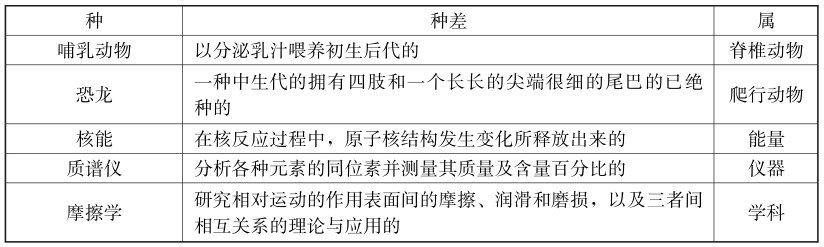
属加种差定义有多种表现形式。这些不同表现形式，从不同的认识需要和认识角度出发，把不同类的事物区别开来。
①发生定义：从被定义词项所指称的事物的发生、来源方面揭示种差的定义形式。
②功用定义：以某种事物的特殊用途作为种差的定义形式。
③关系定义：以事物之间的特殊关系作为种差的定义。